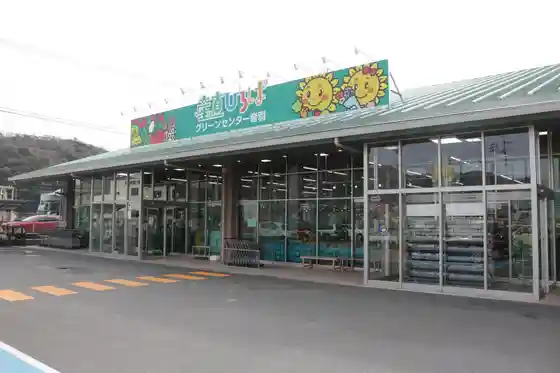
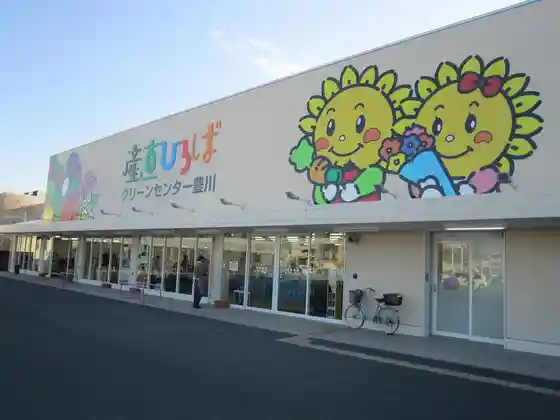
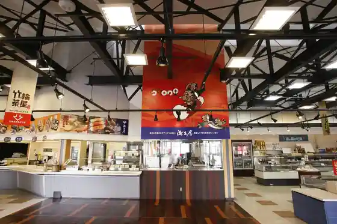

JA Himawari Guriin Center Ichinomiya
Toyokawa, Aichi · 0533-93-6111 · Official / source link
JA Himawari Guriin Center Otowa
Toyokawa, Aichi · 0533-88-6600 · Official / source link

JA Himawari Guriin Center Toyokawa
Toyokawa, Aichi · 0533-85-8318 · Official / source link

Yamasa Chikuwa Village
Toyokawa, Aichi · 0533-85-3451 · Official / source link

Tennen Onsen Motomiya Baths
Toyokawa, Aichi · 0533-92-1880 · Official / source link
Higashi Mikawa Furusato Park
Toyokawa, Aichi · 0533-87-9301 · Official / source link
Ushi Falls
Toyokawa, Aichi · 0533-89-2206 · Official / source link
to Shika Shrine Okunomiya
Toyokawa, Aichi · Official / source link
to Shika Shrine Satomiya
Toyokawa, Aichi · 0533-93-2001 · Official / source link
Yamato no Oi Cho
Toyokawa, Aichi · 0533-89-2206 · Official / source link
Akatsuka Yama Park
Toyokawa, Aichi · 0533-89-8891 · Official / source link
Miyaji Yama
Toyokawa, Aichi · 0533-89-2140 · Official / source link
(Tokaido) Goyu no Matsunami Ki Museum
Toyokawa, Aichi · 0533-88-5120 · Official / source link
(Tokaido) Akasaka Shukuba Shiryoshitsu Yoramaikan Bridge Ya
Toyokawa, Aichi · 0533-80-1357 · Official / source link
Toyokawa Inari (Toyokawa Kaku Myo Gen Tera)
Toyokawa, Aichi · 0533-85-2030 · Official / source link